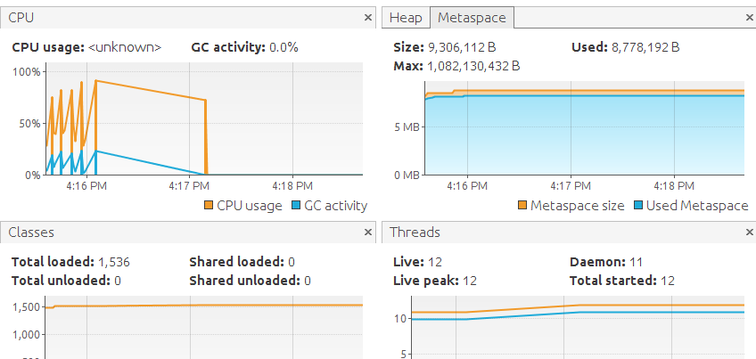
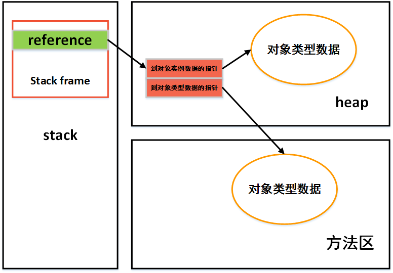
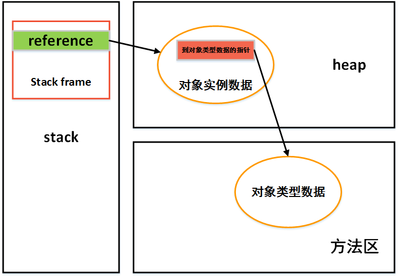

java虚拟机的内存布局及对象加载
数据区域
下图是jvm内存的一个概览(图片来自网络)，可以分为程序计数器，虚拟机栈，本地方法栈，方法区，直接内存等几个部分。

程序计数器
解释器通过这个值控制读取下一条字节码指令，因为关系到线程切换后的恢复，每个线程都会有一个独立的程序计数器，各个线程之间互不影响。当在执行的是Native方法时计数器为空值。
vm stack
线程私有，每个方法在执行时都会创建一个stack frame,这个stack frame里面会存储局部变量表，操作数栈，动态链表，方法出口等信息。
在编译代码时stack frame里面需要的局部变量大小，栈的深度就已经确定，所以stack frame分配多大的变量不会受程序运行期间变量数据的影响。位于栈顶的元素称为当前stack frame,虚拟机运行的所有字节码都只针对当前的stack frame操作。
传统的堆栈概念里的栈在vm stack中更像是局部变量表部分
本地方法栈
为虚拟机所使用的native方法服务
堆
被所有线程共享，按道理来讲所有的对象实例以及数组都要分配在堆上，但是 《深入理解java虚拟机》 中写到
随着JIT编译器的发展与逃逸分析技术的逐渐成熟，栈上分配，标量替换优化技术将导致一些变化
方法区
在JDK1.7及其以前的版本中也会被称为永久代，被所有线程共享，用于存储已被虚拟机加载的类，常量，静态变量，即时编译后的代码等数据，之所以称之为永久代时因为HotSpot设计团队把GC分代收集扩展至方法区。
这种实现方法在jdk1.8中已经被放弃，JDK8 HotSpot JVM 将移除永久区，使用本地内存来存储类元数据信息并称之为：元空间（Metaspace）所以在JDK1.8中命名为PermGen的内存空间将全部移除，JVM的参数：PermSize 和 MaxPermSize 会被忽略并给出警告（如果在启用时设置了这两个参数）。
Metaspace 的内存分配模型：大部分类元数据都在本地内存中分配，默认情况下，类元数据只受可用的本地内存限制，也可用新参数（MaxMetaspaceSize）限制本地内存分配给类元数据的大小。如果没有指定这个参数，元空间会在运行时根据需要动态调整。原来位于永久代的一些杂项数据已经移到Java堆空间中。
通过JVisualVM可以看到Metaspace的消耗情况

运行时常量池
是方法区的一部分，在class文件中的常量池部分信息用于存放编译期间生成的各种字面量和符号引用，这部分在加载时放入方法区的运行时常量区存放。
为什么要从方法区中独立出来一块存放运行时常量呢？ //没想明白，后期补充
运行时常量池相的一个特点时具有动态性，并非是预先放在class文件常量池中内容才能进入运行时常量池，运行期间也可以把新的方法放入常量池。，如String的intern()方法。
直接内存
使用native函数库直接申请堆外内存，通过一个DirectByteBuffer对象作为这块内存的引用。(NIO类)
对象创建
根据参数检查常量池中有无这个类的引用，并检查是否已经被加载，解析和初始化过
为新对象分配内存，内存分配有指针碰撞和空闲列表两种方法，根据不同的垃圾收集算法会采用不同的内存分配策略
分配内存的操作的多线程的环境下是不安全的，有两种方案可以解决这个问题：
1，分配空间动作并行化 – 虚拟机采用CAS(一种乐观锁的实现方式)加上失败重试保证操作的原子性
2，预先为每个线程在堆中分配一小块空间，称为本地线程分配缓存(TLAB)。只有在TLAB用完重新分配时才需要同步锁定。可以通过 -XX:+/-UseTLAB参数来设置虚拟机是否使用TLAB内存空间初始化为0
虚拟机对象要对对象进行必要设置：是哪个类的实例，对象哈希码，对象GC年代信息…这些信息存放对象头中。
调用 < init > 方法
对象的内存布局
对象的内存可以分为 对象头，实例数据，对齐填充三部分。
对象头，分为两部分，
第一部分存储对象自身运行需要的信息(hashcode,GC年代，锁状态，持有的锁等)，这部分在32位和64位的虚拟机中长度分别32bit和64bit第二部分是类型指针，虚拟机通过这个指针来确定这个参数时哪个类型的实例。
实例数据部分，从父类继承下来的还有子类自己定义的各种类型的字段内容都需要定义。
对象访问定位
主流的有句柄和直接指针两种。使用句柄来访问的优点是栈中reference的地址时稳定的，当对象因为垃圾收集被移动时不需要修改reference本身，直接访问的好处时访问速度快。

